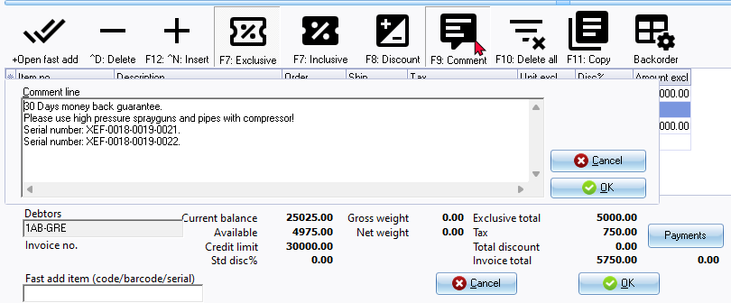
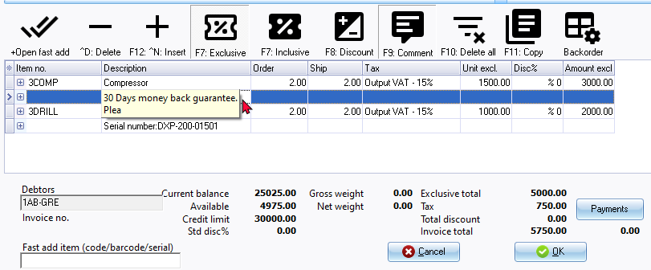

Insert comments - Documents
Comments
Comments are additional information which can be entered when processing documents. This additional information will be printed on layout files for sales documents (e.g. Invoices, Credit note and Quote) and purchase documents (e.g. Purchases, Supplier returns and Orders).
Information entered in comments can be used to find and track specific invoices, etc.
|
|
By default, comments is inserted below a selected item. The option "Append notes below item" (Setup → Documents setup (Setup ribbon)) is added to set the preference if comments should be added before, or below (default option), a selected item when processing documents and printing comments on layout files. The default "Append notes below item" setting is selected (ticked). It will display on document lines and document layout files as follows:
If the "Append notes below item" setting is not selected. It will display on document lines and document layout files as follows:
|

To insert a comment in a document:
- Select the row or line directly underneath the transaction for which you wish to insert a comment.
|
|
If you have any other transactions below the selected line or row, which you wish to keep, it is recommended that you click on the ^N:Insert icon, or press the Ctrl + N keys to insert a line or row before you change the selected line to a comment. |
|
|
You should note that if any information or a transaction is displayed in a selected line, that information would be lost for the selected line or row. |

- Click on the F9:Comment icon.
 - Enter the comment for the stock item, or transaction, and click on the OK button. The comment will be transferred into the selected line or row and will display as follows on the Document entry form:

|
|
You may double-click on a selected comment to edit an existing comment. |

|
|
You may also click on the + (before stock item code) to add a remark (additional information) for a stock item. This remark will also be printed before the comment (if added) on document layout files. |
|
|
|
- Press the Enter key on your keyboard to proceed to the next line or row.
|
|
Although the full comment is not displayed on the comment line or row, it will be displayed as entered on the printed document (transaction section). For example; |
- You may proceed to enter any further transactions for the debtor (customer / client) or creditor (supplier / vendor). If you are finished, click on the Esc key on your keyboard to exit (close) the Stock item lookup screen, and to return to the Document list screen.
Serial number tracking
Should you for example, enter a serial number in the comment of a document, you may locate it on the Search - Investigator. To do this:
- On the Default ribbon, select Search (Ctrl + F3). The "Investigator" screen will be displayed.
- Enter the serial number.
- Click on the Search now button.
- The sales document (e.g. Invoices, Credit note or Quote) and purchase documents (e.g. Purchases, Supplier returns or Orders) containing that serial number will be listed. To display the selected document, simply double-click on it.